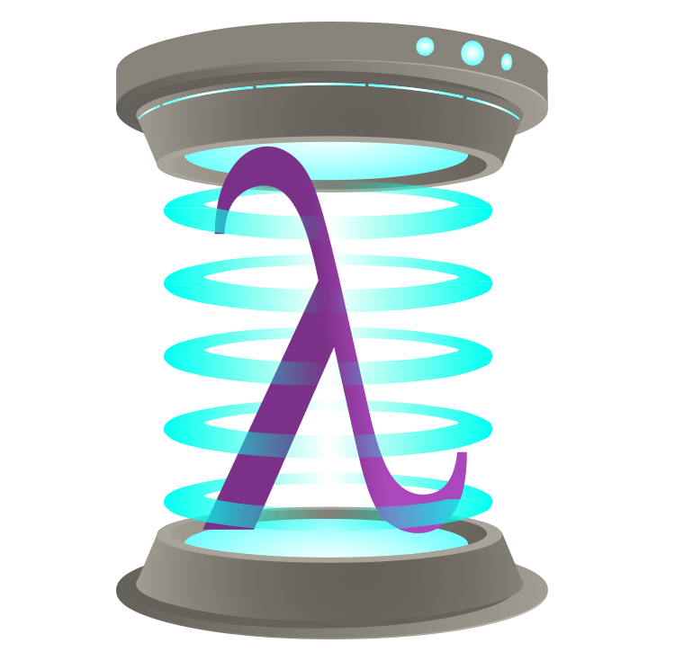

Home

Beam is a highly-general library for accessing any kind of database with
Haskell. It supports several backends. beam-postgres and beam-sqlite are
included in the main beam repository. Others are hosted and maintained
independently, such as beam-mysql and beam-firebird. The documentation here
shows examples in all known backends.
Beam is highly extensible and other backends can be shipped independently without requiring any changes in the core libraries.For information on creating additional SQL backends, see the manual section for more.
Beam features
- Easy schema generation from existing databases
- A basic migration infrastructure for working with multiple versions of your database schema.
- Support for most SQL92, SQL99, and SQL2003 features across backends that support them, including aggregations, subqueries, and window functions.
- A straightforward Haskell-friendly query syntax. You can use Beam's
Qmonad much like you would interact with the[]monad. - No Template Haskell Beam uses the GHC Haskell type system and nothing else. The types have been designed to be easily-inferrable by the compiler, and appropriate functions to refine types have been provided for the where the compiler may need more help.
How to install
Beam is available via Hackage and Stackage, and can be included in
your stack project by adding beam-core and an appropriate beam
backend to your .cabal file. Some projects may want to follow the
latest master, for the newest features. If so, put the following in
your stack.yaml to build and use beam in your project!
packages:
- .
- location:
git: https://github.com/haskell-beam/beam.git
commit: <latest master commit>
extra-dep: true
subdirs:
- beam-core
- <backend>
and add the following to your .cabal file, in the build-depends section:
beam-core,
<backend>
You may also want to add the beam-migrate package if you want to
manage your database schemas in Haskell as well.
Available backends are:
-
beam-postgres-- A feature-complete backend for the Postgres RDBMS. See the beam-postgres documentation for more information. -
beam-sqlite-- A feature-complete backend for the Sqlite library. Note that SQLite does not support all SQL92 features, so some of the examples may not work. Refer to the beam-sqlite documentation for more information on compatibility. -
beam-duckdb-- A new backend for DuckDB. See the beam-duckdb documentation for more information. -
beam-mysql-- A backend for MySQL or MariaDB. Maintained separately on GitHub.
Quick Start Guide
For those looking to get started with beam, we first recommend you go through the tutorial. The user guide contains much more detailed reference-like information. Finally, the documentation on hackage is always available (although the types may seem obtuse).
If you're interested if beam supports your favorite database feature, refer to the documentation for your backend or take a look at the compatibility matrix.
How to Contribute
We always welcome contributions, especially to cover more database features or
to add support for a new backend. Help is available on the
beam-discussion Google Group.
The following is a quick step-by-step guide of contributing a new feature:
- Fork the github repository at
https://github.com/haskell-beam/beamand clone the fork to a local directory. - Work on your feature on your own branch, or pick an issue.
- When you feel ready to contribute the feature back to
beam-core, send a Pull Request on Github, with an explanation of what your patch does and whether it breaks the API. - Respond to community comments and rework your patch.
- When the maintainer feels comfortable with your patch, he will commit it to
the
masterbranch and it will be included in the next minor version. API-breaking changes will not be included until the next major version.
Tip
Be sure to add your name to
the
CONTRIBUTORS file
for eternal fame and glory!
Questions, Feedback, Discussion
- For frequently asked questions, see the FAQ.
- For general questions, feedback on patches, support, or other concerns, please write to the mailing list
- For bugs or feature requests, please open an issue
Why Beam?
Beam is the most feature-complete, turnkey Haskell database solution out there. It supports the bulk of the SQL92, SQL99, SQL2003, SQL2006, SQL2008, SQL2011, and SQL2016 specifications, as well as the entire breadth of features of each of its backends. See the compatibility matrix. You will rarely be forced to write a SQL query 'by hand' when using Beam (but you can).
Additionally, Beam plays nice with the rest of the Haskell ecosystem, the standard Beam backends are all implemented in terms of pre-existing Haskell packages. Beam does not intend to make every query work across every database, and you are free to write queries in beam's DSL that only work on particular backends, using type classes to restrict which backends work. It is assumed that you have chosen you RDBMS with much care, and we want to support you in that. Beam's main purpose is to marshal data back and forth, to serve as the source of truth for the DB schema, and to generate properly formed SQL from Haskell expressions.